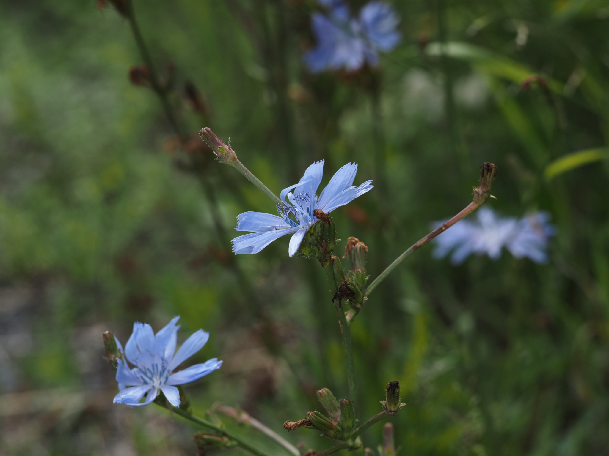
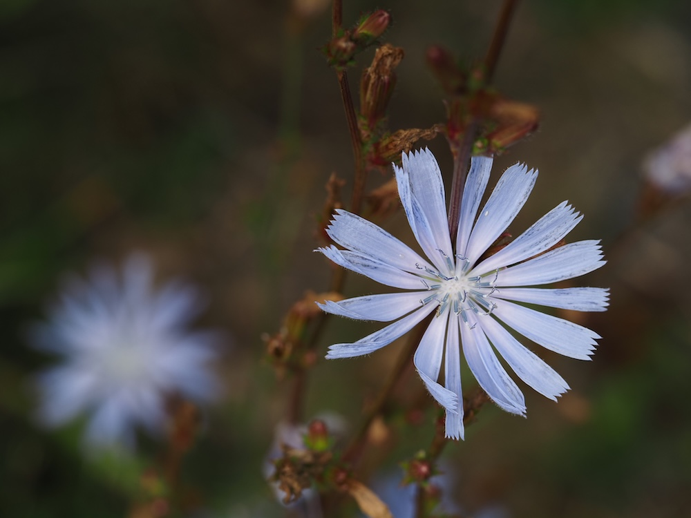

Himmelblau am Wegrand – die Pflanze, die nur halbtags blüht.



Die Pflanze mit der Bürozeit
Die Blüten der Wegwarte öffnen sich am frühen Vormittag und schließen sich kurz nach Mittag wieder – streng nach Sonnenstand. Carl von Linné nutzte diese Pünktlichkeit als Bestandteil seiner berühmten „Blumenuhr" im 18. Jahrhundert. Wer also zur Mittagszeit eine geschlossene Wegwarte sieht, weiß: Sie hat Feierabend, nicht etwa schlechtes Wetter.
Die Pflanze, die zum Kaffee wurde
Aus der dicken Pfahlwurzel der Wegwarte wird seit dem 18. Jahrhundert „Zichorienkaffee" gewonnen – ein koffeinfreier Ersatz für echten Kaffee, besonders in Krisenzeiten beliebt („Muckefuck"). Auch die heute kultivierten Salate Chicorée, Radicchio und Endivie sind nichts anderes als Zuchtformen dieser scheinbar unscheinbaren Wegrand-Pflanze.
Wissenswertes & Merksätze
Erkennungszeichen
Sparrig verzweigter, fast blattloser Stängel mit großen himmelblauen Korbblüten direkt an den Ästen. Stängel und Blätter geben beim Anschneiden weißen Milchsaft ab.
Ökologische Pionierin
Die Wegwarte ist eine sogenannte Ruderalpflanze: Sie besiedelt karge, gestörte Böden – Schuttplätze, Bahndämme, Wegränder. Mit ihrer tiefen Pfahlwurzel lockert sie verdichteten Boden und bereitet ihn für andere Arten vor.